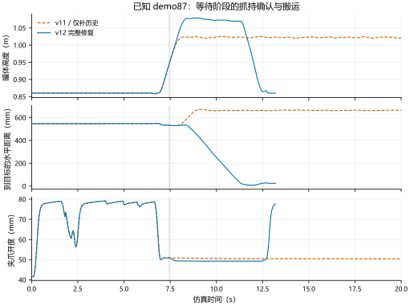
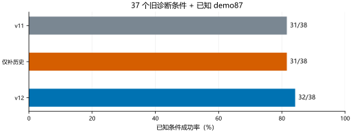

v12 聚焦等待阶段的抓持确认。原世界模型与 BC 权重保持冻结；相同起点、相同噪声、相同 400 步预算，逐阶段检验是否改善。
v11：2/3 / history：2/3 / v12：3/3
v11：31/38 / history：31/38 / v12：32/38
按预先登记的阶段顺序推进。
小测试和消融使用已知案例，开发集用于筛选。只有预先锁定的新起点才属于独立确认。旧 v5 成果继续保留；共享恢复改进不等同于世界模型的独立优势。

